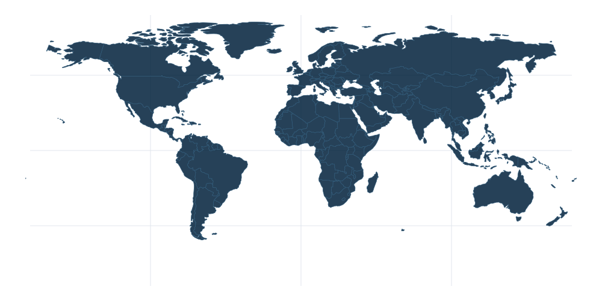

Рабочий макет приложения. Переключайте разделы, подключайтесь к узлу, открывайте карту и отправляйте сообщение — всё живёт, но данные демонстрационные.
Uzelio
Раздача включена · 2 устройства
Ваша сеть
Всё под контролем
МФ
Соединение установленоПрямой канал · P2P
Хельсинки
Прямой канал · 46 мс. Трафик выбранных приложений идёт через Uzelio.
СтранаФинляндияЗадержка46 мсМаршрутP2P
Подключаемся к узлу…
Трафик
сегодня · демо
+12%
2,4 ГБ
Получено2,4 ГБ
Отдано1,1 ГБ
Устройства2 из 3
Узлы рядом и в мире
демонстрационные узлы

пример распределения · не точная география
Найдено: 12
Через Uzelio
Выбрано 3 приложения
CChromeбраузер
TTelegramмессенджер
SSpotifyмузыка
DDiscordобщение
Вся системаВесь TCP/UDP, кроме транспорта Uzelio
АК
Анна Ковалёва
В сети · прямой канал
Личная переписка · сквозное шифрованиеистория на устройствах
Сегодня
Привет! Давай в субботу выберемся за город?
Давай. Нашёл хорошее место у озера.
Маршрут.pdf2,4 МБ · документ
Тогда до встречи!
Доставлено
Анна печатает…
Отправим, когда ваши устройства будут в сети одновременно.
Сообщение дождётся соединения на вашем устройстве
Профиль
Ваше устройство
МФ
Максим Фёдоров
Windows 11 · этот компьютер
uzel://a3f…9c
Ключ активенИстория локально2 из 4 устройств
Моё приглашение
Поделитесь кодом или QR — только с теми, кому доверяете.
Мои устройства
2 из 4
Этот компьютерWindows 11 · ключ активен
Сейчас
Pixel 9Android 15 · синхронизирован сегодня
В сети
Рабочий ноутбукWindows 11 · нет связи 3 дня
Нет связи
ПланшетAndroid 14 · нет связи неделю
Нет связи
Скорость раздачи
минимум — треть измеренной отдачи
24 Мбит/с
Исходящая24 Мбит/сМинимум8 Мбит/сУстройств2 / 3
Минимум: 8 Мбит/с. Ниже этого значения лимит не сохранится.
DNS использует обычную сеть. Фрагменты IPv6 и сбой компонента могут оставить прямой выход.
Карта сети
демонстрационные узлы · обнаруженная часть сети
Поиск активен
схематичные контуры · регионы приблизительные
Макет интерактивный: вкладки, подключение к узлу, карта, отправка сообщения. Данные демонстрационные.
На узком экране макет уменьшен для обзора. Мобильные экраны — ниже.
9:41
UzelioМФ
Ваша сеть
Всё под контролем
Соединение установленоХельсинки · 46 мс
P2P
Получено2,4 ГБ
Отдано1,1 ГБ
Устройства2 / 3
CTS+23 приложения
История только у васСквозное шифрование, без сервера
Главная · телефон
9:41
АК
Анна КовалёваВ сети
Сквозное шифрование
Сегодня
Привет! Давай в субботу выберемся за город?Давай. Нашёл хорошее место у озера.Маршрут.pdf2,4 МБ · документТогда до встречи!12:42 · ДоставленоДоговорились. В 10 утра у озера?В 10 утра. Возьму термос ☕
Анна печатает…
Написать сообщение…
Сообщение дождётся соединения
Переписка · телефон
Одна композиция
Та же сеть. Другой размер.
Телефон повторяет главную: статус, показатели, карта и приложения. Нижняя навигация — «Главная», «Чаты», «Профиль». Карта и трафик открываются из карточек, а не живут отдельными вкладками.
48 dp — минимальная область касания
Тот же акцент и честные состояния
Тёмная тема как основа, свет — как акцент
Это визуальный макет. Рабочие Android-экраны не изменялись.
04
Честные состояния
Красивый интерфейс не имеет права придумывать сеть. Состояния говорят словами, показывают причину и предлагают следующий шаг — без бесконечных декоративных пульсаций.
Ищем узлы…
Узлы появятся здесь автоматически. Поиск уже идёт — это не ошибка.
Поиск активен
Нет связи с каталогом
Проверьте интернет или повторите поиск. Сеть не обязана быть доступной всё время.
Включите раздачу
Чтобы пользоваться чужой раздачей, включите свою. Минимального объёма нет.
Обнаружение выключено
Ожидает отправки
Сообщение ждёт
Отправим, когда ваши устройства будут в сети одновременно. История не теряется.
В очереди · на этом устройстве
Правило брендбука сохранено: состояние всегда продублировано текстом, цвет не единственный сигнал, демонстрационные числа не попадают в рабочие данные.
05
Движение
Анимация — часть языка состояний. Она короткая, предсказуемая и всегда отключается системной настройкой.
Живой узел · 46 мс
Сначала состояние
Потом красота.
Пульс узла означает активную связь. Если связи нет — нет и пульса. Движение не изображает то, чего не происходит в сети.
140мс
Отклик
Кнопки, переключатели, нажатия
320мс
Переход
Смена раздела и слои карты
900мс
Показатели
Счётчики, графики, появление данных
∞фон
Только живые данные
Маршрут, пульс связи, печатающий собеседник
prefers-reduced-motion — анимации выключаются; интерфейс остаётся полностью рабочим.
Криваяcubic-bezier(.22, 1, .36, 1)
Пружина без перелёта, но с характером. Никакой линейности в интерфейсе.
Смена экранаплавно, без мигания
ГлавнаяЧаты
Контент появляется из глубины: масштаб 98 → 100%, прозрачность 0 → 100%, blur 4 → 0 px.
Дозировка1 идея — 1 движение
Одновременно двигается только то, что помогает понять изменение состояния.